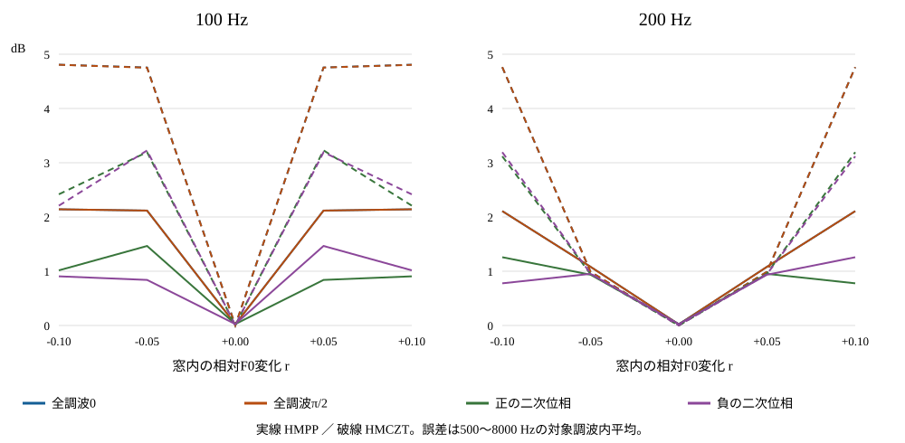

音高が動くと調波振幅の誤差はどう変わるか
Apronが使うHMPPと比較対象HMCZTを、振幅が分かっている人工信号40条件で調べた。定常な8条件ではHMCZTの平均誤差が小さかった。一方、音高が動く32条件ではHMPPが小さい条件が28、HMCZTが小さい条件が4あった。定常音だけでは方式を選べないため、Apronは変更しない。
これは既知の中心F0を与えた調波解析部品の比較で、Apron全体の音質順位ではない。40条件は2種類のF0・5種類の傾き・4種類の位相を組み合わせた人工条件であり、独立した40人の発話ではない。合成器による復号をしていないため、試聴音声はない。
小さい音高変化では位相によって順序が入れ替わった
100 Hz・全調波の位相0では、平均絶対振幅誤差が定常時のHMPP 0.0211 dB／HMCZT 0.0017 dBから、r=+0.10で2.1415／4.8075 dBになった。ただし200 Hz・|r|=0.05では、全0・全π/2位相の4条件でHMCZTの誤差が小さく、二次位相の条件ではHMPPが小さかった。代表例だけで一律の得失を判断しない。

全40条件の比較を見る
| F0 Hz | r | 位相 | HMPP | HMCZT | P95 dB |
|---|---|---|---|---|---|
| 100 | -0.10 | 全調波0 | 2.1415（1位） | 4.8075（2位） | 6.1752 / 13.6874 |
| 100 | -0.10 | 全調波π/2 | 2.1415（1位） | 4.8062（2位） | 6.1752 / 13.7020 |
| 100 | -0.10 | 正の二次位相 | 1.0162（1位） | 2.4180（2位） | 2.2011 / 8.2147 |
| 100 | -0.10 | 負の二次位相 | 0.9060（1位） | 2.2085（2位） | 2.0977 / 7.5712 |
| 100 | -0.05 | 全調波0 | 2.1178（1位） | 4.7557（2位） | 5.9265 / 13.5004 |
| 100 | -0.05 | 全調波π/2 | 2.1178（1位） | 4.7519（2位） | 5.9265 / 13.4685 |
| 100 | -0.05 | 正の二次位相 | 1.4655（1位） | 3.1950（2位） | 8.3369 / 12.2018 |
| 100 | -0.05 | 負の二次位相 | 0.8396（1位） | 3.2261（2位） | 1.4286 / 12.2051 |
| 100 | +0.00 | 全調波0 | 0.0211（2位） | 0.0017（1位） | 0.0441 / 0.0048 |
| 100 | +0.00 | 全調波π/2 | 0.0211（2位） | 0.0018（1位） | 0.0441 / 0.0049 |
| 100 | +0.00 | 正の二次位相 | 0.0259（2位） | 0.0021（1位） | 0.0671 / 0.0061 |
| 100 | +0.00 | 負の二次位相 | 0.0259（2位） | 0.0019（1位） | 0.0671 / 0.0058 |
| 100 | +0.05 | 全調波0 | 2.1178（1位） | 4.7557（2位） | 5.9265 / 13.4807 |
| 100 | +0.05 | 全調波π/2 | 2.1178（1位） | 4.7544（2位） | 5.9265 / 13.4951 |
| 100 | +0.05 | 正の二次位相 | 0.8396（1位） | 3.2278（2位） | 1.4286 / 12.2489 |
| 100 | +0.05 | 負の二次位相 | 1.4655（1位） | 3.1935（2位） | 8.3369 / 12.1574 |
| 100 | +0.10 | 全調波0 | 2.1415（1位） | 4.8074（2位） | 6.1752 / 13.6911 |
| 100 | +0.10 | 全調波π/2 | 2.1415（1位） | 4.8048（2位） | 6.1752 / 13.6948 |
| 100 | +0.10 | 正の二次位相 | 0.9060（1位） | 2.2088（2位） | 2.0977 / 7.5524 |
| 100 | +0.10 | 負の二次位相 | 1.0162（1位） | 2.4173（2位） | 2.2011 / 8.2070 |
| 200 | -0.10 | 全調波0 | 2.1080（1位） | 4.7616（2位） | 5.8189 / 13.1122 |
| 200 | -0.10 | 全調波π/2 | 2.1080（1位） | 4.7630（2位） | 5.8189 / 13.1185 |
| 200 | -0.10 | 正の二次位相 | 1.2584（1位） | 3.1184（2位） | 2.4197 / 11.1124 |
| 200 | -0.10 | 負の二次位相 | 0.7771（1位） | 3.1940（2位） | 1.4090 / 11.3603 |
| 200 | -0.05 | 全調波0 | 1.0817（2位） | 0.9893（1位） | 2.6087 / 2.5089 |
| 200 | -0.05 | 全調波π/2 | 1.0817（2位） | 0.9898（1位） | 2.6087 / 2.5153 |
| 200 | -0.05 | 正の二次位相 | 0.9356（1位） | 0.9476（2位） | 2.4143 / 2.4276 |
| 200 | -0.05 | 負の二次位相 | 0.9513（1位） | 0.9579（2位） | 2.4288 / 2.5642 |
| 200 | +0.00 | 全調波0 | 0.0208（2位） | 0.0006（1位） | 0.0433 / 0.0016 |
| 200 | +0.00 | 全調波π/2 | 0.0208（2位） | 0.0009（1位） | 0.0434 / 0.0030 |
| 200 | +0.00 | 正の二次位相 | 0.0256（2位） | 0.0007（1位） | 0.0680 / 0.0021 |
| 200 | +0.00 | 負の二次位相 | 0.0256（2位） | 0.0007（1位） | 0.0680 / 0.0019 |
| 200 | +0.05 | 全調波0 | 1.0817（2位） | 0.9890（1位） | 2.6087 / 2.5087 |
| 200 | +0.05 | 全調波π/2 | 1.0817（2位） | 0.9895（1位） | 2.6087 / 2.5104 |
| 200 | +0.05 | 正の二次位相 | 0.9513（1位） | 0.9580（2位） | 2.4288 / 2.5688 |
| 200 | +0.05 | 負の二次位相 | 0.9356（1位） | 0.9476（2位） | 2.4143 / 2.4293 |
| 200 | +0.10 | 全調波0 | 2.1080（1位） | 4.7606（2位） | 5.8189 / 13.1100 |
| 200 | +0.10 | 全調波π/2 | 2.1080（1位） | 4.7620（2位） | 5.8189 / 13.1160 |
| 200 | +0.10 | 正の二次位相 | 0.7771（1位） | 3.1941（2位） | 1.4090 / 11.3671 |
| 200 | +0.10 | 負の二次位相 | 1.2583（1位） | 3.1182（2位） | 2.4197 / 11.1119 |
全80測定が成功し、失敗0、未実行0、dB未定義0。主帯域は4560調波行で、500以上4000未満が2080行、4000以上8000以下が2480行。帯域別、中央値・最大値、二方法の対応差、同じ位相の定常対照との差は集計JSON、符号付き誤差と4800調波の保存値は全個票CSVにある。正負の誤差を相殺した平均ではなく、絶対値の平均を表にした。
同じ窓でも、峰を探す方法と指定周波数を見る方法は違う
HMPPは予想した調波周波数の周囲から峰を探し、対数振幅を補間する。HMCZTは指定した調波周波数を直接評価する。名前にChirp-Zとあるが、ここでは音高の傾きへ自動適応していない。両者とも同じ固定ソースの周期的Blackman窓で、厳密算術での振幅規格化は同じである。事前説明にあった窓・規格化の違いはソース確認で訂正し、今回の差の原因には挙げない。
理想算術では、定常対照は4周期窓に正しく収まるのでHMCZTは既知振幅を回収できる。一方、HMPPのFFT格子から外れる調波は補間を要する。実測にはfloat32入力と数値計算があるため、理論上の一致を厳密なゼロ誤差とは扱わない。これは結果の解釈であり、新たな動作確認や再実行はしていない。
既知の人工信号を使い、保存値を別に照合した
入力は24 kHz・1921標本。中心40 msのF0を100または200 Hzとし、振幅係数を一定に保った調波列のF0だけを直線的に動かした。窓は4周期、100 Hzで40 ms、200 Hzで20 ms。位相4種とrの5水準を先に固定し、入力を見た正規化や選別は行わない。真の振幅、生成式、出力上限の違い、上流版は方法と限界に記した。
測定記録は2026年10月24日02:50:03〜02:50:12（日本時間）。別集計で40入力の式、80個票、240群の統計、120の方法間比較、240の定常対照差を照合した。保存496ファイルのハッシュと、上流49ファイルのGit blobも一致した。これは保存値と来歴の確認で、独立環境でのnative再測定ではない。ビルド警告1件と確認の限界は来歴、照合件数は監査記録に残した。
次は窓長と入力のずれを分け、自然音声への判断は急がない
今回の正解F0と時間一定の振幅は人工的な条件で、F0再推定、Rd、雑音、復号は通していない。HMPPとHMCZTの自然音声での得失を、この振幅誤差だけでは説明できない。次は振幅の時間変化、入力音量、F0のずれ、F0再推定、窓長を別々の固定計画で測る。既存の自然120録音の4条件比較はそのまま保持し、今回の値を品質点数や採用根拠へ置き換えない。
出典と検討記録
Weruaga・Képesi（2003）は変化する音高に合わせた分析を扱うが、実音声例は手動F0・8 kHzで、今回の自動ボコーダーの品質証拠ではない。Smithの放物線補間の解説は定常な正弦波でも補間誤差があり得ることを説明する。その数表を今回の複数調波や傾きの誤差へ直接当てはめない。仮想5役・2巡の検討、入力の固定記録、全測定の終了状態を参照。